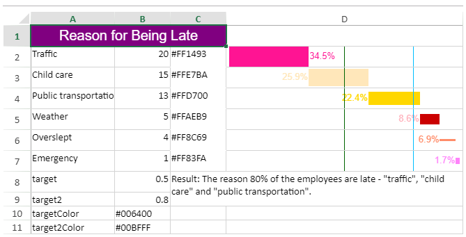

You can add a pareto sparkline using the ParetoSparkline formula and cell values.

The pareto sparkline has the following options:
| Option | Description |
| points | A reference that represents the range of cells that contains all values, such as "B2:B7". |
| pointIndex | A number or reference that represents the segment's index of the points, such as 1 or "D2". The pointIndex is >= 1. |
| colorRange | A reference that represents the range of cells that contain the color for the segment box, such as "D2:D7". This setting is optional. The default value is none. |
| target | A number or reference that represents the 'target' line position, such as 0.5. This setting is optional. The default value is none. The target line color is #8CBF64 if shown. |
| target2 | A number or reference that represents the 'target2' line position, such as 0.8. This setting is optional. The default value is none. The target2 line color is #EE5D5D if shown. |
| highlightPosition | A number or reference that represents the rank of the segment to be colored in red, such as 3. This setting is optional. The default value is none. If you set the highlightPosition to a value such as 4, then the fourth segment box's color is set to #CB0000. If you do not set the highlightPosition, the segment box's color is set to the color you assigned to the colorRange or the default color #969696. |
| label | A number that represents whether the segment's label is displayed as the cumulated percentage (label = 1) or the single percentage or none (label = 2) or none, such as 2,1. This setting is optional. The default value is 0. |
| vertical | A boolean that represents whether the box's direction is vertical or horizontal. This setting is optional. The default value is FALSE. |
| targetColor | A color string that indicates the color of the target line. |
| target2Color | A color string that indicates the color of the target2 line. |
| labelColor | A color string that indicates the label fore color. |
| barSize | A number value greater than 0 and less than or equal to 1, which indicates the percentage of bar width or height according to the cell width or height. |
The pareto sparkline formula has the following format:
=PARETOSPARKLINE(points, pointIndex, colorRange, target, target2, hightlightPosition, lable, vertical, targetColor, target2Color, labelColor, barSize)
The point index (second formula parameter) refers to the point value's index of the points range. In the following example, 2 refers to the 15.
The following code creates a pareto sparkline using a group of formulas.
| JavaScript |
Copy Code
|
|---|---|
// initializing Spread var spread = new GC.Spread.Sheets.Workbook(document.getElementById('ss'), { sheetCount: 1 }); // get the activesheet var activeSheet = spread.getSheet(0); activeSheet.addSpan(0, 0, 1, 3); activeSheet.getCell(0, 0, GC.Spread.Sheets.SheetArea.viewport).value("Reason for Being Late") .font("20px Arial") .hAlign(GC.Spread.Sheets.HorizontalAlign.center) .vAlign(GC.Spread.Sheets.VerticalAlign.center) .backColor("purple") .foreColor("white"); activeSheet.getRange(1, 2, 6, 1, GC.Spread.Sheets.SheetArea.viewport).setBorder(new GC.Spread.Sheets.LineBorder("transparent", GC.Spread.Sheets.LineStyle.thin), { inside: true }); activeSheet.setValue(1, 0, "Traffic"); activeSheet.setValue(2, 0, "Child care"); activeSheet.setValue(3, 0, "Public transportation"); activeSheet.setValue(4, 0, "Weather"); activeSheet.setValue(5, 0, "Overslept"); activeSheet.setValue(6, 0, "Emergency"); activeSheet.setValue(7, 0, "target"); activeSheet.setValue(8, 0, "target2"); activeSheet.setValue(1, 1, 20); activeSheet.setValue(2, 1, 15); activeSheet.setValue(3, 1, 13); activeSheet.setValue(4, 1, 5); activeSheet.setValue(5, 1, 4); activeSheet.setValue(6, 1, 1); activeSheet.setValue(7, 1, 0.5); activeSheet.setValue(8, 1, 0.8); activeSheet.setValue(1, 2, "#FF1493"); activeSheet.setValue(2, 2, "#FFE7BA"); activeSheet.setValue(3, 2, "#FFD700"); activeSheet.setValue(4, 2, "#FFAEB9"); activeSheet.setValue(5, 2, "#FF8C69"); activeSheet.setValue(6, 2, "#FF83FA"); activeSheet.setValue(9, 0, "targetColor"); activeSheet.setValue(10, 0, "target2Color"); activeSheet.setValue(9, 1, "#006400"); activeSheet.setValue(10, 1, "#00BFFF"); activeSheet.addSpan(7, 2, 2, 2); activeSheet.getCell(7, 2, GC.Spread.Sheets.SheetArea.viewport).wordWrap(true); activeSheet.setValue(7, 2, 'Result: The reason 80% of the employees are late - "traffic", "child care" and "public transportation".'); activeSheet.setColumnWidth(0, 120); activeSheet.setColumnWidth(1, 80); activeSheet.setColumnWidth(2, 80); activeSheet.setColumnWidth(3, 340); activeSheet.setRowHeight(0, 30); activeSheet.setRowHeight(1, 30); activeSheet.setRowHeight(2, 30); activeSheet.setRowHeight(3, 30); activeSheet.setRowHeight(4, 30); activeSheet.setRowHeight(5, 30); activeSheet.setRowHeight(6, 30); activeSheet.setRowHeight(7, 30); /$B$10, $B$11, C2: C7, D2: D7 //targetColor, target2Color, labelColor, barSize) activeSheet.setFormula(1, 3, '=PARETOSPARKLINE(B2:B7,1,C2:C7,B8,B9,4,2,false,B10,B11,C2,1)'); activeSheet.setFormula(2, 3, '=PARETOSPARKLINE(B2:B7,2,C2:C7,B8,B9,4,2,false,B10,B11,C3,0.8)'); activeSheet.setFormula(3, 3, '=PARETOSPARKLINE(B2:B7,3,C2:C7,B8,B9,4,2,false,B10,B11,C4,0.6)'); activeSheet.setFormula(4, 3, '=PARETOSPARKLINE(B2:B7,4,C2:C7,B8,B9,4,2,false,B10,B11,C5,0.5)'); activeSheet.setFormula(5, 3, '=PARETOSPARKLINE(B2:B7,5,C2:C7,B8,B9,4,2,false,B10,B11,C6,0.1)'); activeSheet.setFormula(6, 3, '=PARETOSPARKLINE(B2:B7,6,C2:C7,B8,B9,4,2,false,B10,B11,C7,0.3)'); |
|